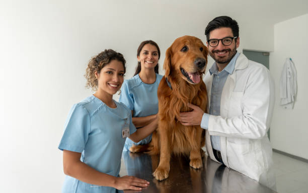

Consultas & Vacinas
Check-ups gerais e aplicação de vacinas importadas para manter a saúde em dia.
Atendimento humanizado e profissionais qualificados 24 horas por dia.
Agendar ConsultaFundada em 2020, a Clínica VetPatinhas nasceu do amor pelos animais. Nossa missão é oferecer medicina veterinária de alta qualidade com carinho e respeito.
Valorizamos a prevenção, o cuidado personalizado e a confiança entre cliente e equipe.

Check-ups gerais e aplicação de vacinas importadas para manter a saúde em dia.
Centro cirúrgico moderno e equipe preparada para procedimentos complexos.
Banhos, tosas de raça e hidratação com produtos específicos para cada tipo de pelagem.
Atendimento imediato em casos críticos, garantindo segurança e cuidado contínuo.
Especialista em pequenos animais e cirurgias complexas.
Veterinário clínico geral, apaixonado por prevenção e bem-estar animal.
Profissionais especializados em tosas e cuidados estéticos personalizados.
"Excelente atendimento, minha doguinha adorou!" - Vivian L.
"Profissionais competentes e muito atenciosos." - Guilherme P.
"Recomendo para todos que amam seus pets." - Bárbara J.